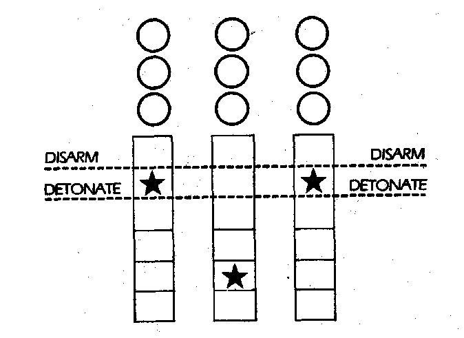

381
You walk along the edge of the forest towards the village; curls of smoke wind up from the holes in the roofs of the cottages and huts. As you approach it, your holo-detector picks up a hologram - a Time Machine has been disguised as trees. Your Psychic Awareness catches a thought as if you have discovered somebody doing something they shouldn't. Abort reconnaissance you sense next. There is a click and a hiss as of a hatch opening and closing and a group of nearby trees wink out abruptly. A metre-long metal canister rolls down from the bank on which the Time Machine had stood. You run towards it and recognise it as a nuclear bomb. The digits on the timer are ticking past, like an old-fashioned 20th century fruit machine. The symbols an foreign but you guess that all of the red stars will be in line within about thirty seconds. The nuclear device appears to be of standard design and is capable of destroying Vienna and most life-forms within twenty miles of this spot. This would change history beyond recognition. As you watch, another of the red stars clicks into place on the DETONATE line. The dials click forward one space at a time and when the middle star has clicked forward three times the three stars will be lined up on the DETONATE line and the bomb will explode. Each of the three dials has three buttons above it with which you can manually move the dials 1, 2 or 3 positions onward but you don't know which button is which. You press the buttons above the two dials whose stars are on the DETONATE line, but they are locked. You will have to move the star on the middle dial to thi DISARM position without pressing a button that will make it stop on the DETONATE line. Which button do you press:
| The top button? | Turn to 358 |
| The centre button? | Turn to 342 |
| The bottom button? | Turn to 327 |